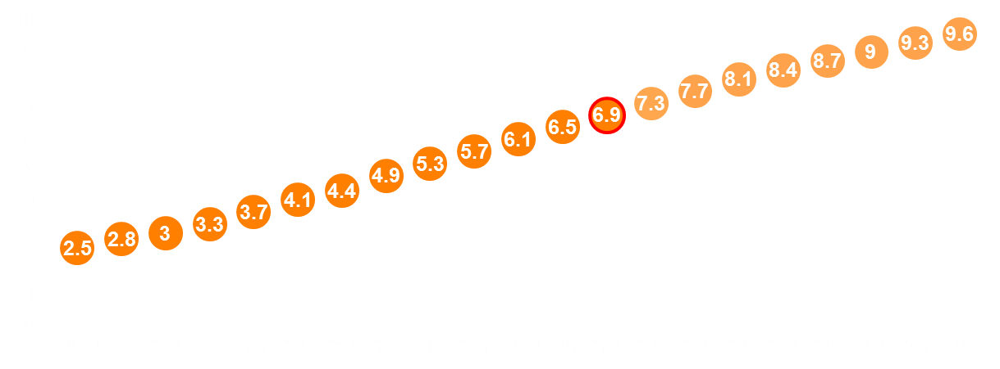
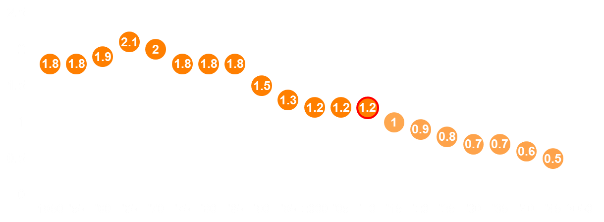
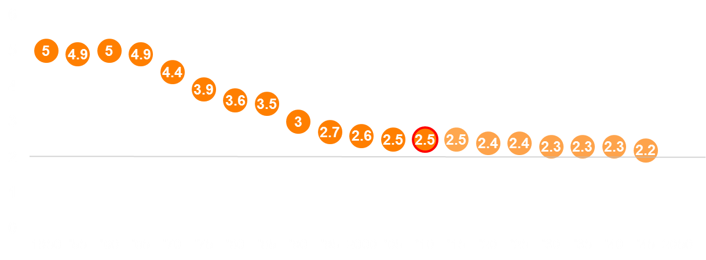
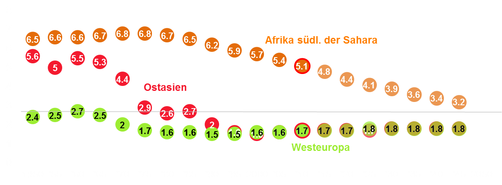
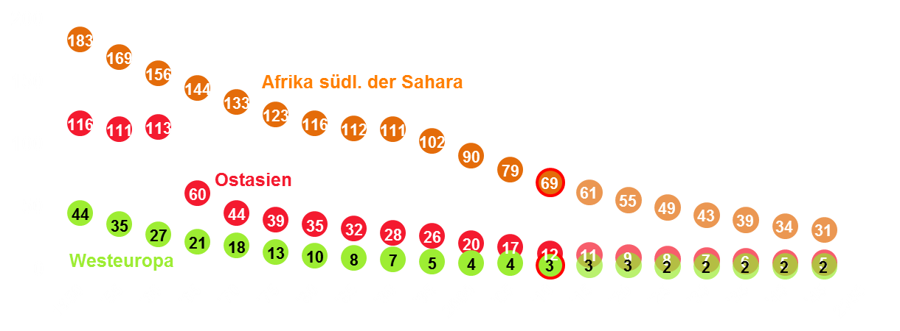
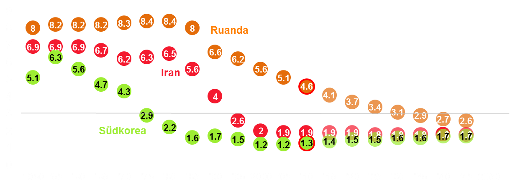
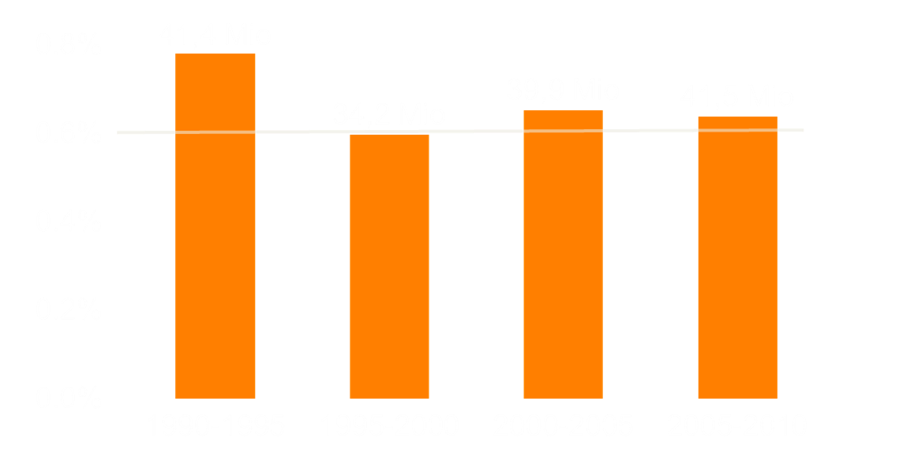

Wie viele Menschen trägt die Erde?
Nikola Sander
Institut für Demographie,
Österreichische Akademie der Wissenschaften
Magdeburg, September 2014
Slides: nikolasander.com/ideen2020
Sind schwindende Ressourcen, Armut und Klimawandel Folgen der Überbevölkerung?
Die Weltbevölkerung wächst
UNO: Bevölkerung in Milliarden
Das Wachstum schwächt sich ab
UNO: jährliche Wachstumsrate in %
(1,2% entspricht +1 Mrd. alle 12 Jahre)
Wir bekommen weniger Kinder
Die Geburtenrate sinkt
UNO: durchschnittl. Anzahl der Kinder pro Frau
Nur einige Länder Afrikas sind noch weit über dem Bestandserhaltungsniveau von 2,1 Kinder pro Frau
Hohe Geburtenraten auch bedingt durch hohe Kindersterblichkeit
UNO: Kindersterblichkeitsrate (Tode pro 1.000 Geburten)
Die Geburtenrate sinkt wenn sich medizinische Versorgung und Bildungsniveau verbessern
UNO: durchschnittl. Anzahl der Kinder pro Frau
Die Erde ist nicht überbevölkert
Die Bevölkerung konzentriert sich aber zunehmend in den Städten
Gängige Annahme: Internationale Migration steigt rasant
Medien: Europa wird von Einwanderern überrannt
Kaum zuverlässige Daten zu globalen Migrationsströmen
Daten für weniger als 50 Länder.
Unterschiede in der Erfassung.
Vergleichbare Daten nur innerhalb Europas.
Bestandsdaten besser erfasst
Vor allem in Volkszählungen und Registern.
Menschen die in einem anderen Land geboren wurden.
UNO hat 2013 einen bilateralen Datensatz veröffentlicht.
Akkumulierte Daten sagen wenig über aktuelle Trends aus.
Wie viele Menschen sind im Zeitraum 2005-10 weltweit migriert?
Schätzung von Strömen auf der Basis von Bestandsdaten der UNO
Bestandsdatenim Ausland geborerene Bevölkerung 1990, 2000, 2010 ~220 Länder |
➜ |
Unsere SchätzungenWanderungen über 5-Jahresperioden 1990-95 bis 2005-10 196 Länder |
Keine Zunahme der globalen Migration
Etwa 0,6 Prozent der Weltbevölkerung sind seit 1995 über 5-Jahresperioden migriert.

"Quantifying Global International Migration Flows"
Von Guy Abel & Nikola Sander
Veröffentlicht in Science am 28. März 2014.
Interaktive Datenvisualisierungen:
"Binnenwanderung in Deutschland"
nikola.sander@oeaw.ac.at
www.nikolasander.com
@nikolasander